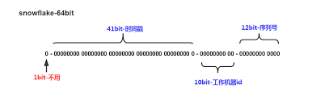
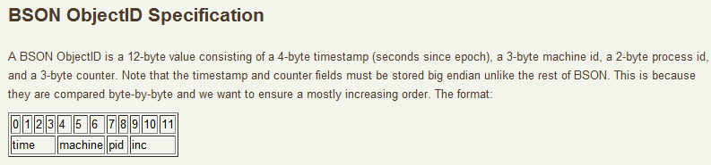

不管我们是不是有身份的人，我们一定是有身份证的人，身份证上面的号码就是我们的ID，理论上这个ID是全国唯一的，而且通过这个号码，我们还可以得到一些个人信息，比如前两位可以确定我们第一次申请身份证的时候所在的省份、接下来的四位可以确定我们所在的区县，然后还可以知道我们出生的年月以及性别。
在我们的计算机应用中，也处处存在的ID， 比如订单编号、商品ID、微博ID、微信消息ID、书的ISDN号、商品条码等等。通过ID，可以迅速定位到对象实体、为对象之间建立关联、跟踪对象在不同服务之间的流转等等。
有的ID是无意义的唯一的标识，有的ID还能提供额外的信息，比如时间和机房信息等等。为了确保唯一性，有的ID使用很长的字节数，比如256个字节，有的通过递增的long类型，只需要8个字节来表示。考虑到存储、信息包含量、性能、安全等因素，一个好的ID的设计至关重要。
介绍ID生成和分布式的方案的文章已经非常非常多了，比如文末中的参考资料中的文章，所以我在本文中简洁的汇总各个方案的优缺点，然后介绍一个分布式的ID生成器项目rpcxio/did,它可以实现单节点百万级的ID生成。

ID 生成方案
UUID/GUID
通用唯一识别码（Universally Unique Identifier，缩写：UUID）是用于计算机体系中以识别信息数目的一个128位标识符，也就是可以通过16个字节来表示。
UUID可以根据标准方法生成，不依赖中央机构的注册和分配，UUID具有唯一性，这与其他大多数编号方案不同。重复UUID码概率接近零，可以忽略不计。
GUID有时专指微软对UUID标准的实现(Globally Unique Identifier, 缩写:GUID)，通常表示成32个16进制数字（0－9，A－F）组成的字符串，如：{21EC2020-3AEA-1069-A2DD-08002B30309D}，实质上还是是一个128位长的二进制整数,在Windows生态圈中常用。
UUID 由开放软件基金会（OSF）标准化，作为分布式计算环境（DCE）的一部分。
UUID的标准型式包含32个16进位数字，以连字号分为五段，形式为8-4-4-4-12的32个字元。范例：550e8400-e29b-41d4-a716-446655440000
在其规范的文本表示中，UUID 的 16 个 8 位字节表示为 32 个十六进制（基数16）数字，显示在由连字符分隔 '-' 的五个组中，"8-4-4-4-12" 总共 36 个字符（32 个字母数字字符和 4 个连字符）。例如：
|
|
四位数字 M表示 UUID 版本，数字 N的一至三个最高有效位表示 UUID 变体。在例子中，M 是 1 而且 N 是 a(10xx)，这意味着此 UUID 是 "变体1"、"版本1" UUID；即基于时间的 DCE/RFC 4122 UUID。
对于 "变体(variants)1" 和 "变体2"，标准中定义了五个"版本(versions)"，并且在特定用例中每个版本可能比其他版本更合适。
版本由 M 字符串中指示。
- "版本1" UUID 是根据时间和节点 ID（通常是MAC地址）生成;
- "版本2" UUID是根据标识符（通常是组或用户ID）、时间和节点ID生成;
- "版本3" 和 "版本5" 确定性UUID 通过散列 (hashing) 命名空间 (namespace) 标识符和名称生成;
- "版本4" UUID 使用随机性或伪随机性生成。
优点
- 容易实现，产生快
- ID唯一(几乎不会产生重复id)
- 无需中心化的服务器
- 不会泄漏商业机密
缺点
- 可读性差
- 占用空间太多(16个字节)
- 影响数据库的性能, 比如UUID or GUID as Primary Keys? Be Careful!
递增的整数
可以通过关系型数据库的自增主键产生唯一的ID，现在流行的商业数据库都支持自增主键的特性，比如mysql等。
一些nosql数据库也提供类似特性，比如Redis。
优点
- 容易产生
- 可读性好，容易记住
- 存储很小，比如4个字节
缺点
- 需要中心化的服务器，并且需要处理单点的问题，而且单点有性能瓶颈的问题。
- 如果ID暴露给公共访问，可能会泄漏商业机密。比如最近浑水报告通过统计销售小票推断出某商业模式的每日单量。
- 需要访问一次数据库获取ID
随机数
递增的整数可以用在内部的服务中，如果用在外部，可能会泄漏信息，所以如果能产生随机数就可以解决这个问题。
当然直接生成随机数可能比较困难，你可以在递增的整数上产生伪随机的整数，比如使用skip32, 它还可以直接进行反解码，在内部反解出原来的递增的ID，所以在一些场景的也有广泛的应用，比如在Postgrepsql中可以实现skip32 function)。
另外一个比较常用的加密递增ID方法是hashid,它可以转换数字比如347为字符串yr8，并且还可以反解出来，提供了很多语言的实现，比如go-hashids、hashids-java、hashids.c等。
对于64 bit的整数，你可以使用Block ciphers实现加密。也有把64 bit整数分成两部分，分别应用skip32进行加密的。
优点
- 可读性高
- 占用存储小，4个字节就可以了
- 随机，不会泄漏信息
缺点
- 同样需要中心化的服务，有单点问题和性能问题
- 需要两步，先产生递增的ID,再进行随机加密
随机字符串
另外一个产生随机ID方法是直接产生一个小的随机的字符串，比如短网址服务中的ID。 产生随机字符串的方法很多， 比图tinyurl和bit.ly使用的基于62字符的随机字符串, 基于hash(MD5)+base62等, 应用在Bitcoin地址上的可读性更好的Base58
优点
- 短，5个字符(字节)就可以表示10亿个ID。
- 可读性高
- 随机，不会泄漏信息
缺点
- ID可能不唯一，需要检查和处理
Twitter的snowflake算法
Twitter的snowflake分布式ID的算法是目前广泛使用的分布式ID算法，尽管有很多变种，比如位数的不同，时间片大小不同、node bit数放在最后等各种变种，但是主要思想还是来自于snowflake的思想。 同时访问方法也各种个样，比如提供memcached协议访问和Redis协议访问等等。
Twitter在2010年儿童节的时候在官方博客上介绍了snowflake算法,内部用来表示每一条tweet，尽管这个项目已经不再维护了snowflake-2010。

snowflake算法采用64bit存储ID, 最高位备用，暂时不使用。接下来的41 bit做时间戳，最小时间单位为毫秒。再接下来的10 bit做机器ID(worker id)，然后最后12 bit在单位时间(毫秒)递增。
41 bit表示时间戳大约可以使用69年(2^41 -1), 为了尽可能的表示时间，时间戳可以从第一次部署的时候开始计算，比如2020-02-02 00:00:00, 这样69年内可以无虞。
10 bit区分机器，所以可以支持1024台机器。 你也可以把10bit分成两部分，一部分做数据中心的ID,一部分做机器的ID，比如55分的化，可以支持32个数据中心，每个数据中心最多可以支持32台机器。
12 bit自增值可以表示4096的ID,也就是说每台机器每以毫秒最多产生4096个ID,这是它的最大性能。
正如前面所说，时间戳、机器ID、自增ID所占的位数可以根据你实际的情况做调整。
snowflake还有一个很好的特性就是基本保持顺序性，因为它的前几位是时间戳，可以对ID按照时间进行排序。 另外在微服务中直接使用ID就可以计算sla。
优点
- 存储少, 8个字节
- 可读性高
- 性能好，可以中心化的产生ID,也可以独立节点生成
缺点
- 时间回拨会重复产生ID
- ID生成有规律性,信息容易泄漏
MongoDB ObjectID
MongoDB的主键类型ObjectID也是一种ID生成方案，比如5349b4ddd2781d08c09890f3,它看起来是一个包含24个字符的字符串，实际采用12个字节来存储。

它使用4个字节代表时间戳，3个字节代表机器ID,2个字节代表机器进程ID,然后3个字节代表自增值。
相对于snowflake,它采用了更多的存储(多了四个字节),可以容纳更多的信息
优点
- 可读性高
- 性能好，可以中心化的产生ID,也可以独立节点生成
缺点
- 占用存储较多
- 时间回拨会重复产生ID
- ID生成有规律性,信息容易泄漏
分布式ID生成器服务 did
前面是一些ID生成的背景知识的介绍，这里介绍一个分布式ID生成器rpcxio/did)，它基于snowflake的算法，但是提供了可以定制的算法，支持初始化设置worker id和自增值的bit数。
因为它是一个中心化的ID生成器服务，所以每次获取ID都有额外的网络开销，所以最好一次申请一批数据，然后client在本地使用，用不了丢掉即可，所以did服务还提供批量获取ID的方法。
安装did的服务需要定时的和时间服务器进行同步，这个短时间的回拨不会影响ID的产生。 重启服务一般也没有问题，因为各个节点和时间服务器的误差在毫秒左右，而重启至少是秒级的操作，所以不会有重复的ID产生。 唯一怕的时候手工将时间回拨一个很长的时间(几个小时、几天)，然后这个时候再重启服务，一般生产环境中也不会这么去做。
因为可以部署多个did服务做集群，所以可以提供容错机制，少量did节点宕机不会影响ID生成服务的访问。
因为snowflake算法性能优异，所以ID生成服务部署的节点不需要很多，每个机房只需要几台机器就可以了，所以你可以压缩worker id占用的bit数，扩大自增值占用的bit数。
测试中，单个节点可以提供12万ID/秒的产生速度，而如果采用批量获取100ID的话，可以取得接近三百万ID/秒的性能。
|
|
参考资料
- https://www.simpleorientedarchitecture.com/7-strategies-for-assigning-ids/
- https://www.callicoder.com/distributed-unique-id-sequence-number-generator/
- https://juejin.im/post/5b3a23746fb9a024e15cad79
- https://tech.meituan.com/2017/04/21/mt-leaf.html
- https://i6448038.github.io/2019/09/28/snowflake/
- https://soulmachine.gitbooks.io/system-design/content/cn/distributed-id-generator.html
- https://juejin.im/post/5bb0217ef265da0ac2567b42
- https://chai2010.cn/advanced-go-programming-book/ch6-cloud/ch6-01-dist-id.html
- https://zh.wikipedia.org/zh-hans/%E9%80%9A%E7%94%A8%E5%94%AF%E4%B8%80%E8%AF%86%E5%88%AB%E7%A0%81
- https://zhuanlan.zhihu.com/p/46404167